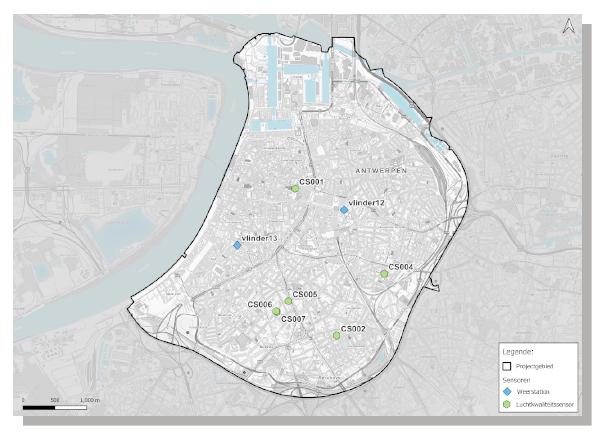

Antwerpse urban digital twin
Tussen 3 februari en 2 juni voerde ik gedurende 18 weken eem stageopdracht uit bij Geo Solutions. Geo Solutions is een bedrijf in de geo-ict wereld en voert projecten uit waar location intelligence en geo-data aan te pas komen. De opdracht was om een urban digital twin te maken in het Azure Digital Twins platform en hierbij de OGC-standaard voor 3D-stadsmodellen te integreren.
Het stageproject is ontstaan vanuit de toenemende interesse en vraag naar digital twins in stedelijke omgevingen, zogenaamde ‘Urban Digital Twins’. Door de groeiende complexiteit en uitdagingen waarmee steden worden geconfronteerd is er een stijgende vraag naar geavanceerde technologieën die kunnen helpen bij het doorbreken van datasilo’s binnen een stad en het plannen, ontwerpen, en beheren van steden op een efficiënte en duurzame manier. Ook Geo Solutions ziet bij zijn klanten een duidelijke vraag naar digital twin oplossingen en wilde met stageproject nagaan in hoeverre het Azure platform een meerwaarde kon zijn in toekomstige projecten.
| Team: | Kevin Vandeputte |
| Technologie: | Azure, Python, Blender |
| Looptijd: | februari - juni 2023 |
Tijdens de conceptfase maakte ik een plan van aanpak open deelde ik het project in twee grotere fases: de analyse- en de realisatiefase. Tijdens de analysfase bestudeerde ik de begrippen en concepten, benchmarkte ik het project, stelde ik een planning op voor de realisatiefase en bepaalde ik de usecase voor het project. Ik besloot om een urban digital twin op te maken van de Antwerpse binnenstad en zou hier enkele sensoren aan koppelen. On de integratiemogelijkheden van de OGC_standaard aan te tonen besloot ik regendata te gebruiken en op basis hiervan en de dakoppervlakte van de stadsobjecten afstroming te bepalen naar een gekoppelde twin.
De ontwikkeling van het project liep gefaseerd in kleine tussenstappen. Deze zijn te herleiden naar drie grotere delen. Het eerste deel was het opzetten van de Azure Digtil Twins service. Hier dacht ik na hoe ik een modelmatige representatie van de stad kon opmaken en hoe ik de modellen hiervoor moest definieren. Ik implementeerde ook een manier om de OGC-gestandardiseerde objecten te integreren in het model en bouwde uiteindelijk de twin graph op. Het modelleren van de stadsomgeving is een vrij conceptueel proces en vergt abstract en conceptueel denkvermogen. Mijn achtergrond in watermodelleren gaf me hier een voordeel.
De tweede fase was het deel waarin ik de digital twin tot leven liet komen. Ik zette zelf de nodige Azure services op en schreef de code die ervoor zorgde dat de hele datastroom vlot doorheen de digital twin stroomde. Naast de dataflow in de digital twin zelf zorgde ik ook dat de digital twin met de echte wereld kon commmuniceren. Zo zorgde ik ervoor dat waarschuwingen worden uitgestuurd indien drempelwaarden worden overschreden en zette ik een realtimefunctionaliteit op die verbonden clients in staat stelt om in realtime statusupdates te ontvangen.
De derde fase bestond eruit om de digital twin te visualiseren. Om een realistsche weergave van de stad te bekomen gebruikte ik de OGC-gestandardiseerde objecten. Hierdoor werd de meerwaarde van deze standaard meteen duidelijk. Ik gaf de overige twin ook een visuele component mee zodat in een oogopslag de status duidelijk is. Via API's werd er een interactieve component aan toegevoegd zodat het een dynamisch en interactief geheel werd.
Bekijk hier de demovideo van het project:
Tijdens het project had ik een wekelijks overlegmoment voorzien waarin ik de voortgang en stand van zaken van het project besprak met de verschillende betrokkenen. Aangezien het deels ook een onderzoeksproject was vond ik het belangrijk om dit wekelijks te doen in plaats van tweewekelijkse meetings. Op die manier bleef iedereen nauw betrokken bij het project.
| Plan van aanpak: | Plan van aanpak - Toe te voegen |
| Projectnota: | Projectnota - toe te voegen |
| Refelctie: | Reflectie - toe te voegen | URL demovideo: | Demovideo - toe te voegen |